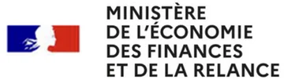
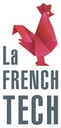

Gus
An AI employee that lives in a service business's WhatsApp, drafting quotes and invoices, managing the diary and cutting admin.
Home / Ventures
VenturesOne flagship that helps governments and enterprises run their own AI, a new line of AI products, and the companies before them. Several sold.

Enterprise AI consultancy, Sydney and Dubai. Inova exists to help enterprises and governments build their own AI, locally, sovereign and governed, instead of renting it. BLDR is how we do it.
Governments and enterprises use it to build, govern and run AI agents across the systems they already own: on-premise, in-country or in a private cloud. Human approvals, data classes, versioned policies and audit trails come built in.
Each one is a working answer to “does your AI live in someone else’s house?” in small business, education and healthcare.
An AI employee that lives in a service business's WhatsApp, drafting quotes and invoices, managing the diary and cutting admin.

Award-winning digital reading and writing software that teaches Arabic literacy, taking learners from zero to reading and writing in under 36 hours. The AI version is launching soon.
An AI product for clinics. In build. More when it is ready.
Advice lands differently from someone who has raised the money, shipped the product and sold the company. Several times. These are the scars behind the opinions.

Digital accelerator backed by the Central Bank of Lebanon, orchestrating 39 universities, governments and industry.
Ran more than 150 large-scale transformation programmes across government, education, banking and insurance, with equity stakes in companies including VIP Rescue, URUZ, Agora and Darresni.
A wearable, hospital-grade vital-signs monitor taken from concept to launch, backed by INSEAD Launchpad, Station F, 10x, the French Ministry of the Economy and La French Tech.


Claims, policy and roadside-assistance platform for insurers, connecting clients, police, tow trucks, surveyors and garages live.
45 minutes. Bring one problem: stalled pilots, a governance question, a board brief, data that can’t leave the country. Leave with the first move. If the answer is that you don’t need me, you’ll hear that too.
Not ready to talk? Follow along on LinkedIn or get The AI Glittch in your feed.